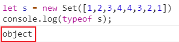
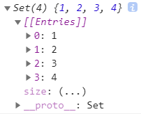
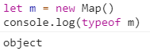
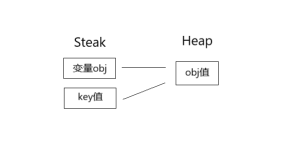
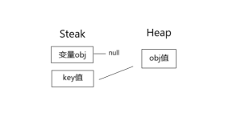
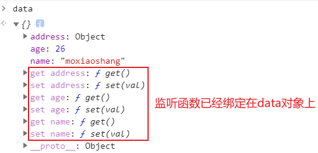
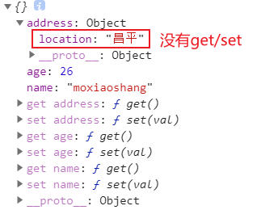
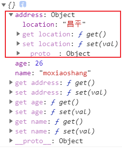
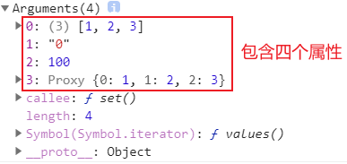
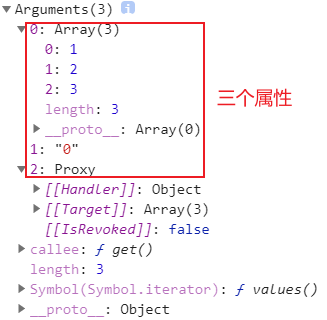

日常的学习笔记，包括 ES6、Promise、Node.js、Webpack、http 原理、Vue全家桶，后续可能还会继续更新 Typescript、Vue3 和 常见的面试题 等等。
Set / Map
Set 和 Map 是两种存储结构。
参考文献 Map和Set | 廖雪峰的官网
Set
首先，Set属于 object 类型（如 下图 所示）

new Set([value]) [value]:Array

Set 是一组 key 集合，但不存储 value。由于key不能重复，所以，在Set中，没有重复的key。
因此，我们常常利用 Set 来实现 数组去重 。
1 | let s = new Set([1,2,3,4,4,3,2,1]) |
通过add(key)方法可以添加元素到Set中，可以重复添加，但不会有效果。
1 | s.add(4); |
通过delete(key)方法可以删除元素
1 | s.delete(3); |
我们可以用以下方法对 Set {1, 2, 3, 4} 进行数组转换处理。
展开运算符
1
2let arr = [...s];
console.log(arr); // [1, 2, 3, 4]Array.form()
1
2let arr = Array.from(s);
console.log(arr); // // [1, 2, 3, 4]
同时，我们可以利用Set实现各种处理，例如实现集合的 并集、交集 和 差集 等。
假如我们现在有以下两个数组。
1 | let arr1 = [1, 2, 3, 4, 4, 3, 2, 1]; |
并集
1
2
3
4
5// 并集
function union() {
return [...new Set([...s1, ...s2])]
}
console.log(union()); // [1, 2, 3, 4, 5]交集
1
2
3
4
5
6
7// 交集
function intersection() {
return [...s1].filter(function (val) {
return s2.has(val)
})
}
console.log(intersection()); // [2, 3, 4]这里我们用到了
filter这个高阶函数来进行处理。差集
差集很好理解，其实就是交集取反，就是 差集。
1
2
3
4
5
6
7// 差集
function diff() {
return [...s1].filter(function (val) {
return !s2.has(val)
})
}
console.log(diff()); // [1]
Map
Map 也属于 Object 类型

Map是一组键值对的结构，具有极快的查找速度。
先对 Map 进行初始化
1 | let m = new Map([['a', 1], ['b', 2], ['3', 3]]); |
我们新建一个Map ，需要一个二维数组，或者直接初始化一个空的 Map。
1 | let m = new Map(); // 空Map |
由于一个 key 只能对应一个 value ，所以，多次对一个key放入value，后面的值会把前面的值替换掉
1 | let m = new Map(); |
在这里我们可以思考一个问题，Map 的 key 是否可以是一个对象呢？
1 | let m = new Map(); |
答案显然是可以的。
这里还有一个小问题，假如我们清空上述的对象类型，那么 key 值是否还存在呢？
1 | let m = new Map(); |
这里我们可以理解为，我们定义的 变量obj 指向 内存空间obj ，然后我们定义了一个Set类型，其key值指向 内存空间obj 。

而后我们又将 变量obj 清空，其原来的 内存空间obj 并没有被销毁，只是改变了其指向。所以 变量obj 的指向并不影响 Set 中 key 的指向，所以才有了上述问题的产生和结果。

针对于上述问题，我们可以提出来另外一个存储结构类型 weakMap，其key值是会被清空的。
weakMap
参考文献 WeakMap-JavaScript | MDN
WeakMap 对象是一组 key/value (键值对)的集合，其中的键是 弱引用 的。其 key 必须是对象，而 value 可以是任意的。
WeakMap 的 key 只能是 Object 类型。 原始数据类型 是不能作为 key 的（比如 Symbol）。
所以我们就可以得出来一个结论了。
Map 的 key 值是强引用类型，在堆内存中存在指向关系，所以不会被垃圾回收机制给清除掉。
而 weakMap 的 key 值是弱引用类型，会被垃圾回收机制清除掉。
Object.defineProperty
参考文献 Object.defineProperty() | MDN Web
Object.defineProperty() 方法会直接在一个对象上定义一个新属性，或者修改一个对象的现有属性，并返回此对象。
同时，Object.defineProperty() 也是 Vue2.0 中双向绑定的核心实现原理。
1 | let obj = {} |
enumerable
当该属性的 enumerable 键值为 true 时，该属性才会出现在对象的枚举属性中，默认为 false。
在这里我们可以引出来一个问题，假如我们直接打印 obj 变量，会输出变量的属性和值吗？
1 | let obj = {} |
我们可以发现，控制台中并未输出 obj 的任何属性。
原因是通过 Object.defineProperty() 定义的属性，都是不可枚举的（enumerable: false）。
我们可以通过修改 enumerable 来达到枚举的效果。
1 | let obj = {} |
这样我们就可以打印出我们定义的属性了。
configurable
当该属性的 configurable 键值为 true 时，该属性的描述符才能够被改变，同时该属性也能从对应的对象上被删除，默认为 false。
同样我们可以先思考一个问题，可以通过描述符 delete 删除我们自定义的属性吗？
1 | let obj = {} |
答案是不可以。
原因是通过 Object.defineProperty() 定义的属性，都是不可配置的（configurable: false）。
我们可以通过修改 configurable 来达到想要的结果。
1 | let obj = {} |
这样我们定义的属性就被删除了。
writable
当该属性的 writable 键值为 true 时，属性的值，也就是上面的 value，才能被赋值运算符改变。
1 | let obj = {} |
getter/setter
getter ：属性的 getter 函数，如果没有 getter，则为 undefined。当访问该属性时，会调用此函数。执行时不传入任何参数，但是会传入 this 对象（由于继承关系，这里的this并不一定是定义该属性的对象）。该函数的返回值会被用作属性的值。
setter ：属性的 setter 函数，如果没有 setter，则为 undefined。当属性值被修改时，会调用此函数。该方法接受一个参数（也就是被赋予的新值），会传入赋值时的 this 对象。
（注：如果我们定义了 getter，则不能再定义 writable）
1 | let obj = {} |
（注：我们需要额外定义一个变量 other）
Vue的 数据劫持 ，就是利用的setter/getter
Vue数据劫持
我们先定义一个需要进行劫持的对象。
1 | let data = { |
随后我们去观察Vue的源码，一步一步的分析 数据劫持 的实现原理。
1 | function updata() { |
模拟更新方法
1
2
3function updata() {
console.log('更新视图');
}手写一个模拟更新的方法，使我们在调用 get/set 的时候更直观。
使用
observer函数观察 data 的变化将我们需要监听的对象传入函数中。
1
2
3
4function observer(obj){
// ...
}
oberver(data);将
Object.defineProperty封装成一个可递归调用的函数。（注：
Object.defineProperty只能用在Object上，数组不识别）所以我们第一步需要进行类型判断，将不是
Object的数据类型返回。1
if(typeof obj !== 'object') return obj; // 类型判断
随后，我们需要循环 obj 的每一个属性，并利用
Object.defineProperty进行 getter 的遍历输出。1
2
3
4
5for (const key in obj) {
Object.defineProperty(obj, key, {
get(){ // ... }
})
}但是这样写会有一个问题，那就是整个代码的灵活性不高，所以在Vue源码中，我们会用一个新的函数
defineReactive将内层代码进行封装。这样我们的代码就变成了
1
2
3for (const key in obj) {
defineReactive(obj, key, obj[key])
}定义响应式函数
defineReactive1
2
3function defineReactive(obj, key, value) {
// ...
}继续将
Object.defineProperty封装成一个函数。1
2
3
4
5
6
7
8
9Object.defineProperty(obj, key, {
get() {
return value
},
set(val) {
update() // 在此设置更新视图触发的函数，使其更直观
value = val // 不需要额外定义全局变量 other
}
})这里我们用到了 闭包 的思想，形参 value 被调用，所以不会被销毁。
所以我们在 set 的时候，不需要额外定义一个全局变量，直接使用 value 即可。
到这一步，我们就可以直接将 set/get 绑定在对象上了。

通过在控制台中的输出，我们又可以发现一个问题

内部属性并没有被绑定 get/set ，所以我们需要进行递归处理。
处理
Object内部属性非常简单，只需要在处理属性前，也就是响应式函数中进行递归处理即可。
1
2
3
4function defineReactive(obj, key, value) {
observer(value) // 将传入的值进行递归
// ...
}这样，内部属性就被绑定了 get/set 了。

直接赋值
Object接下来，我们再来处理另外一个特殊情况。
假如我们在属性中，直接赋值一个新的
Object1
2
3
4data.address = {
location:'北京'
} // 更新视图
data.address.location = '昌平' // 没有任何输出这里我们原本应该会触发两次 update函数 ，但是最终却只触发了一次。
因为我们在 address 属性中绑定了一个新的
Object，而这个对象我们并未进行监听。所以我们只需要在 setter 中，添加一个监听函数即可。
1
2
3
4
5
6
7
8
9
10
11
12Object.defineProperty(obj, key, {
get() {
return value
},
set(val) {
if (val !== value) { // 假如值相同，则不需要进行处理
observer(val) // 进行属性监听
update()
value = val
}
}
})
这种方法我们只能劫持 Object 对象类型，如果我们想要劫持 Array 数组，需要使用 Proxy 。
Proxy
参考文献 Proxy - JavaScript | MDN
Proxy 用于创建一个对象的代理，从而实现基本操作的拦截和自定义（如 属性查找 、赋值 、枚举 、 函数调用等）。
我们来实例化一个 Proxy 对象，看一下实例中包含哪些属性。
1 | let arr = [1, 2, 3]; |
先来看一下 setter 上包含的属性。

- 目标源
- 传入的key值
- 取到的value值
Proxy类
再看一下 getter

- 目标源
- 传入的key值
Proxy类
这样，我们可以清楚的看到，setter 比 getter 多了一个value值。
在Vue中，我们希望数组中的数据一变化，视图就会更新。但是 Object.defindProperty 并不支持数组的更新，所以我们通常会用 Proxy 将数组的方法进行重写。（push(),shift(),unshift(),pop() 等等…）
Vue中的数组
（注：在Vue3中，已经用 Proxy 代替 Object.defindProperty 来做数据劫持）
先来看一下完全写法，随后我们一点一点来分析代码。
1 | function update() { |
模拟更新方法
1
2
3function updata() {
console.log('更新视图');
}手写一个模拟更新的方法，使我们在调用 get/set 的时候更直观。
Proxy中的getter/setter的返回值我们可以将
Proxy中的属性进行操作，然后在getter/setter中，增加我们自定义的方法。1
2
3
4
5
6
7
8
9
10let proxy = new Proxy(arr, {
set(target, key, value) {
update();
return target[key] = value;
},
get(target, key) {
return target[key]
}
})
proxy.push(1);但是这种写法是不推荐的。我们尽量不要去操作原数组，因为数组变化时，可能会调用
push()、pop()等方法，这个时候key值可能会出现问题。所以我们需要使用 Reflect 进行一下优化。优化后的代码如下：
1
2
3
4
5
6
7
8
9
10let proxy = new Proxy(arr, {
set(target, key, value) {
update();
return Reflect.set(target, key, value)
},
get(target, key) {
return Reflect.get(target, key)
}
})
proxy.push(1);解决 自定义函数 错误触发次数的问题
这个时候我们会发现一个问题，我们自定义的函数被触发了两次，但是我们只使用了一次方法。
关于这个问题，原因也很简单。我们打印一下
key值，就可以轻松发现，我们在修改数组时，不仅添加了值，还触发了一次length。因为数组的长度发生了改变，所以
length也被传递到了Proxy的setter中。我们可以通过判断 length 属性，来完成这个问题的修复。
1
if (key === 'length') return true;
在 update() 前，加上此判断即可。
箭头函数
参考文献 箭头函数 | 廖雪峰的官网
首先，箭头函数简单来说，就是函数的缩写。
x => x * x 等同于 function (x) { return x * x }
箭头函数相当于匿名函数，并且简化了函数定义。箭头函数有两种格式，一种像上面的，只包含一个表达式，连{ ... }和return都省略掉了。还有一种可以包含多条语句，这时候就不能省略{ ... }和return
1 | x => { |
如果参数不是一个，就需要用括号()括起来：
1 | // 两个参数: |
如果要返回一个对象，就要注意，如果是单表达式，这么写的话会报错：
1 | // SyntaxError: |
因为和函数体的{ ... }有语法冲突，所以要改为：
1 | // ok: |
这里我们先要明确箭头函数的几个特点
- 箭头函数内部的
this是词法作用域，由上下文确定。 - 箭头函数不存在
arguments属性
this指向
普通函数执行，
.前面是哪个对象，this就指向哪个对象。如果.前面没有调用的对象，那么就指向window（严格模式下指向undefined）构造函数执行，
this是当前类的实例。箭头函数内部的
this是词法作用域，由上下文确定。给元素的某个事件绑定函数，函数触发，this指向当前元素。
call/apply/bind可以改变this的指向。
本篇文章由莫小尚创作，文章中如有任何问题和纰漏，欢迎您的指正与交流。
您也可以关注我的 个人站点、博客园 和 掘金，我会在文章产出后同步上传到这些平台上。
最后感谢您的支持！